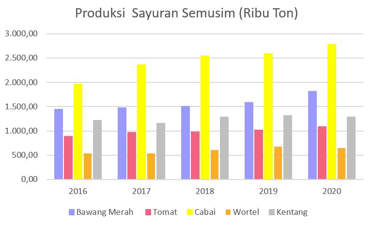
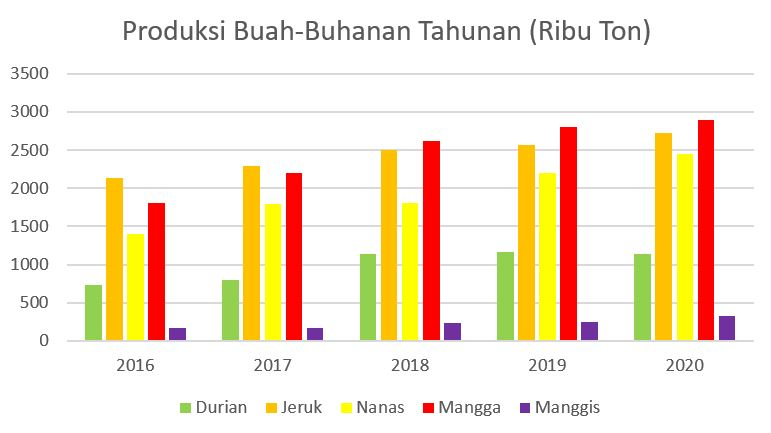
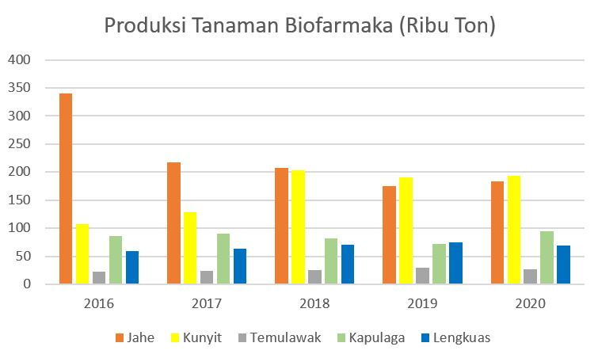
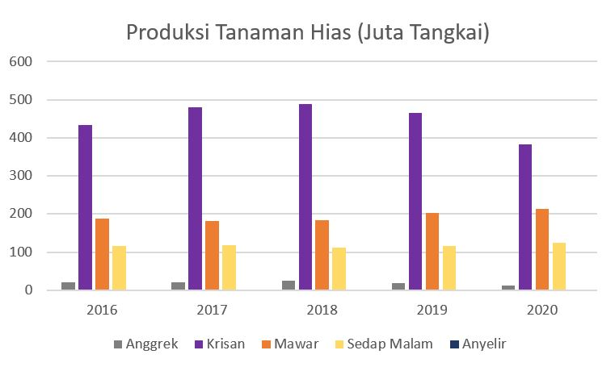

Produksi Holtikultura
1. Sayuran Semusim
Kita tahu bahwa Indonesia merupakan salah satu negara penghasil sayuran semusim. Komoditas sayuran semusim yang mempunyai kontribusi besar terhadap produksi hortikultura dan tingkat inflasi antara lain bawang merah, cabai, kentang, tomat, dan wortel. Tak hanya 5 tanaman itu, masih ada bawang putih, cabai rawit, dan lainnya yang bisa berkontribusi terhadap produksi hortikultura.
Bisa kita lihat dari grafik yang telah dibuat, bawang merah mengalami kenaikan produksi pada tahun 2020 mencapai 1,82 juta ton dan naik sebesar 14,88% (235,21 ribu ton) dari tahun 2019. Sementara konsumsi bawang merah oleh sektor rumah tangga tahun 2020 mencapai 729,82 ribu ton, turun sebesar 2,77% (20,81 ribu ton) dari tahun 2019.
Kedua, produksi tomat tahun 2020 juga mengalami kenaikan dengan 1,08 juta ton, naik sebesar 6,34% (64,66 ribu ton) dari tahun 2019. Konsumsi tomat oleh sektor rumah tangga tahun 2020 mencapai 634,01 ribu ton, naik sebesar 0,79% (4,99 ribu ton) dari tahun 2019 dan konsumsi dari sektor rumah tangga sebesar 45,36% dari total konsumsi tomat.
Ketiga, produksi cabai mengalamai kenaikan sebesar 2,77 juta ton, naik sebesar 7,11% (183,96 ribu ton) dari tahun 2019. Pada tahun 2020, produksi cabai tertinggi terjadi di bulan Agustus yaitu mencapai 280,78 ribu ton dengan luas panen 73,77 ribu hektar. Nilai ekspor cabai pada tahun 2020 mencapai US$ 25,18 juta, naik sebesar 69,86% (US$ 10,36 juta) dari tahun 2019.
Keempat, wortel mengalami penurunan produksi hingga 650,86 ribu ton, turun sebesar 3,52% (23,77 ribu ton) dari tahun 2019. Konsumsi wortel oleh sektor rumah tangga tahun 2020 mencapai 352,23 ribu ton, naik sebesar 2,43% (8,37 ribu ton) dari tahun 2019 dan konsumsi wortel dari sektor rumah tangga sebanyak 26,84% dari total konsumsi wortel.
Terakhir, produksi kentang tahun 2020 mengalami penurunan yang mencapai 1,28 juta ton, turun sebesar 2,42% (31,88 ribu ton) dari tahun 2019. Nilai ekspor kentang pada tahun 2020 mencapai US$ 8,11 juta, naik sebesar 81,39% (US$ 2,06 juta) dari tahun 2019Nilai impor kentang pada tahun 2020 mencapai US$ 114,6 juta, turun sebesar 1,37% (US$ 10,29 juta).
| jenis | Produksi Holtikulutra Sayuran Semusim | |||||
|---|---|---|---|---|---|---|
| 2016 | 2017 | 2018 | 2019 | 2020 | ||
| Bawang Merah | 1.446,86 | 1.470,15 | 1.503,44 | 1.580,24 | 1.815,45 | |
| Tomat | 883,23 | 962,85 | 976,77 | 1.020,33 | 1.084,99 | |
| Cabai | 1.961,58 | 2.359,43 | 2.542,39 | 2.588,63 | 2.777,59 | |
| Wortel | 537,52 | 537,34 | 609,63 | 674,63 | 650,86 | |
| Kentang | 1.213,04 | 1.154,74 | 1.284,75 | 1.314,65 | 1.282,77 | |
2. Buah-Buahan Tahunan
Tidak hanya sayuran semusim yang memiliki kontribusi besar terhadap produksi hortikultura maupun tingkat inflasi, buah buahan tahunan seperti durian, jeruk, mangga, nanas, dan manggis juga ikut berperan dalam hal ini.
Durian yang baunya khas ini mengalami penurunan produksi hingga 1,13 juta ton, turun 3,13% (36,61 ribu ton) dari tahun 2019. Nilai ekspor durian pada tahun 2020 mencapai US$ 232 ribu, turun sebesar 22,92% (US$ 69 ribu) dari tahun 2019.Nilai impor durian pada tahun 2020 mencapai US$ 252 ribu, naik sebesar 3500% (US$ 245 ribu).
Berikutnya ada jeruk, buah ini mengalami kenaikan produksi tiap tahunnya dan pada tahun 2020 mencapai 2,72 juta ton, naik 6,22% (159,46 ribu ton) dari tahun 2019. Pada tahun 2020, produksi jeruk tertinggi terjadi di triwulan 2 yaitu mencapai 828,38 ribu ton dengan tanaman yang menghasilkan sebanyak 19,71 juta pohon.
Selanjutnya, ada nanas yang juga mengalami kenaikan produksi sebesar 2,45 juta ton, naik sebesar 11,42% (250,78 ribu ton) dari tahun 2019. Pada tahun 2020, produksi nanas tertinggi terjadi di triwulan 4 yaitu mencapai 753,94 ribu ton dengan tanaman yang menghasilkan sebanyak 449,06 juta rumpun.
Kemudian ada mangga, buah yang sering dibuat jus ini mengalami kenaikan produksi sebanyak 2,9 juta ton, naik 3,19% (89,65 ribu ton) dari tahun 2019. Nilai ekspor mangga pada tahun 2020 mencapai US$ 4,58 juta, naik sebesar 32,29% (US$ 1,12 juta) dari tahun 2019.Nilai impor mangga pada tahun 2020 mencapai US$ 4,31 juta, naik sebesar 79,44% (US$ 1,91 juta).
Terakhir, buah manggis yang bisa dijadikan bahan obat-obatan mengalami kenaikan pada tahun 2020 mencapai 322,41 ribu ton, naik 30,81% (75,93 ribu ton) dari tahun 2019. Nilai ekspor manggis pada tahun 2020 mencapai US$ 81,15 juta, naik sebesar 90,36% (US$ 38,52 juta) dari tahun 2019.. Nilai impor manggis pada tahun 2020 mencapai US$ 418 ribu, turun sebesar 3,91% (US$ 17 ribu).
| jenis | Produksi Holtikulutra Buah-Buahan Tahunan | |||||
|---|---|---|---|---|---|---|
| 2016 | 2017 | 2018 | 2019 | 2020 | ||
| Durian | 735,42 | 795,21 | 1.142,10 | 1.169,80 | 1.133,19 | |
| Jeruk | 2.138,47 | 2.295,31 | 2.510,42 | 2.563,49 | 2.722,63 | |
| Nanas | 1.396,15 | 1.795,99 | 1.805,51 | 2.196,46 | 2.447,24 | |
| Mangga | 1.814,55 | 2.203,79 | 2.624,78 | 2.808,94 | 2.898,59 | |
| Manggis | 162,86 | 161,75 | 228,15 | 246,48 | 322,41 | |
3. Tanamaan Biofarma
Komoditas tanaman biofarmaka juga mempunyai kontribusi besar terhadap produksi hortikultura adalah jahe, kunyit, dan temulawak (tambahan : kapulagadan lengkuas).
Tanaman jahe mengalami kenaikan produksi pada tahun 2020 mencapai 183,52 ribu ton, naik sebesar 5,24% (9,14 ribu ton) dari tahun 2019. Nilai ekspor jahe pada tahun 2020 mencapai US$ 4,4 juta turun sebesar 10% (US$ 493 ribu) dari tahun 2019. Nilai impor jahe pada tahun 2020 mencapai US$ 16,93 juta, turun sebesar 11% (US$ 185,79 ribu).
Berikutnya ada kunyit, juga mengalami kenaikan yang mencapai 193,58 ribu ton, naik sebesar 1,40% (2,67 ribu ton) dari tahun 2019. Pada tahun 2020, produksi kunyit tertinggi terjadi di triwulan 3 yaitu mencapai 79,03 ribu ton dengan luas panen 3,86 ribu hektar. Provinsi dengan produksi kunyit terbesar adalah Jawa Timur, Jawa Tengah, dan Jawa Barat.
Kemudian tanaman temulawak, megalami kenaikan produksi hingga 69 ribu ton, turun sebesar 6,71 ribu ton dari tahun 2019 dengan luas panen pada tahun 2020 sebesar 1,50 ribu hektar, naik sebesar 1,35% (0,02 ribu hektar) dari tahun 2019. Pada tahun 2020, produksi temulawak tertinggi terjadi di triwulan 4 yaitu mencapai 11,78 ribu ton dengan luas panen 0,84 ribu hektar.
| jenis | Produksi Holtikulutra Tanaman Biofarmaka | |||||
|---|---|---|---|---|---|---|
| 2016 | 2017 | 2018 | 2019 | 2020 | ||
| Jahe | 340,34 | 216,59 | 207,41 | 174,38 | 183,52 | |
| Kunyit | 107,77 | 128,34 | 203,46 | 190,91 | 193,58 | |
| Temulawak | 22,12 | 24,56 | 25,57 | 29,64 | 26,74 | |
| Kapulaga | 86,14 | 90,78 | 81,72 | 72,52 | 94,49 | |
| Lengkuas | 59,45 | 63,53 | 70,01 | 75,36 | 68,65 | |
4. Tanaman Hias
Indonesia merupakan salah satu negara penghasil tanaman hias. Komoditas tanaman hias yang mempunyai kontribusi besar terhadap produksi hortikultura diantaranya adalah anggrek dan krisan (tambahan : mawar, sedap malam, dan anyelir).
Anggrek, tanaman yang banyak digemari di masa ini mengalami penurunan produksi mencapai 11,68 juta tangkai, turun sebesar 37,22% (6,93 juta tangkai) dari tahun 2019 dengan luas panen anggrek tahun 2020 mencapai 95,38 hektar, turun sebesar 0,44% (80,63 hektar) dari tahun 2019. Nilai ekspor anggrek pada tahun 2020 mencapai US$ 69.500, naik sebesar 128,24% (US$ 39.050) dari tahun 2019.
Kemudian ada bunga krisan, tanaman ini mengalami penurunan juga hingga 383,47 juta tangkai, turun sebesar 17,60% (81,89 juta tangkai) dari tahun 2019 dengan luas panen krisan tahun 2020 mencapai 836,96 hektar, turun sebesar 15,44% (157,76 hektar) dari tahun 2019. Nilai ekspor krisan pada tahun 2020 mencapai US$ 733 ribu, naik sebesar 9,08% (US$ 39.050) dari tahun 2019. Negara tujuan utama ekspor krisan adalah Jepang dengan nilai ekspor mencapai US$ 732.064 (43 ton).
| jenis | Produksi Holtikulutra Tanaman Hias | |||||
|---|---|---|---|---|---|---|
| 2016 | 2017 | 2018 | 2019 | 2020 | ||
| Anggrek | 19,98 | 20,05 | 24,72 | 18,61 | 11,68 | |
| Krisan | 433,10 | 480,69 | 488,18 | 465,36 | 383,47 | |
| Mawar | 188,3 | 181,884 | 184,455 | 202,065 | 213,927 | |
| Sedap Malam | 116,687 | 117,094 | 112,289 | 116,909 | 123,52 | |
| Anyelir | 2,185 | 1,814 | 1,672 | 1,732 | 1,872 | |